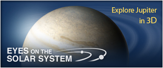

A true-color image of Jupiter taken by the Cassini spacecraft. The Galilean moon Europa casts a shadow on the planet's cloud tops.
Jupiter, the most massive planet in our solar system -- with dozens of moons and an enormous magnetic field -- forms a kind of miniature solar system. Jupiter does resemble a star in composition, but it did not grow big enough to ignite. The planet's swirling cloud stripes are punctuated by massive storms such as the Great Red Spot, which has raged for hundreds of years.
Jupiter's appearance is a tapestry of beautiful colors and atmospheric features. Most visible clouds are composed of ammonia. Water vapor exists deep below and can sometimes be seen through clear spots in the clouds. The planet's "stripes" are dark belts and light zones created by strong east-west winds in Jupiter's upper atmosphere.
NASA's Juno polar orbiter will study how Jupiter formed and became the dynamic world we see today. Juno will also help us to better understand the formation of our solar system and other planetary systems.
National Space Science Data Center Photo Gallery - Jupiter
StarDate - Jupiter
Voyager: Multimedia Tour
Voyager 2 Science Summary for Jupiter
Welcome to the Planets
Jupiter's Ring System
Power to Explore: Radioisotope Power
Compare Jupiter to other Planets/Moons
Calendar
Oct 2013: Juno: Earth Flyby Gravity Assist
Jul 2016: Juno: Jupiter Arrival
Visit Juiter

People Spotlight
Rosaly Lopes
"Study hard and do what you love, then it doesn't feel like work." >
Amy Simon-Miller - Astrophysicist
Steve Squyres - Principal Investigator
Carl Sagan - (1934 - 1996) Planetary Scientist
Mark Hofstadter - Planetary Scientist
Meet More Space Explorers >
Headlines
12 Aug 2013: NASA's Juno is Halfway to Jupiter
23 Apr 2013: Hershel Links Jupiter's Water to Comet Impact
14 Mar 2013: 'Hot Spots' Ride a Merry-Go-Round on Jupiter
17 Oct 2012: Jupiter: Turmoil from Below, Battering from Above
15 Oct 2012: NASA's WISE Colors in Unknowns on Jupiter Asteroids
More Headlines >
Science & Technology Features
10 May 2013: Planets Aligning in the Sunset Sky
18 Apr 2013: Solar System Exploration @ 50: What the Experts Picked
5 Apr 2013: NASA Celebrates Four Decades of Plucky Pioneer 11
25 Feb 2013: 50 Years of Robotic Planetary Exploration: David Kring, Senior Staff Scientist, Universities Space Research Association, Houston; Principal Investigator, LPI-JSC
8 Feb 2013: 50 Years of Robotic Planetary Exploration: Julie Castillo-Rogez, Planetary Geophysicist at the Jet Propulsion Laboratory (JPL)


 Tweet #awesomeplanets
Tweet #awesomeplanets